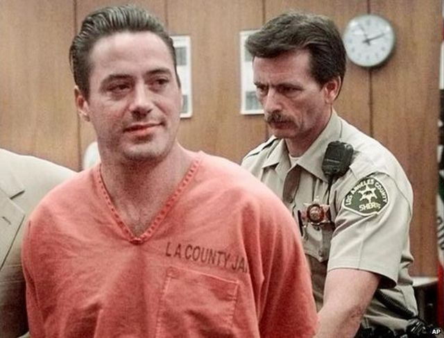

Info
Robert John Downey Jr. is an American actor. His career has been characterized by critical and popular success in his youth, followed by a period of substance abuse and legal troubles, before a resurgence of commercial success in middle age.
The Worst Time in his Life
Before Robert became the big icon he is today he had a major drug abuse problem which had stem from his father Robert Downey Sr. letting him try marijuana at the age of six. Because he was around his father for the most of his early career he became a daily drinker and slowly started using heavier drugs.
